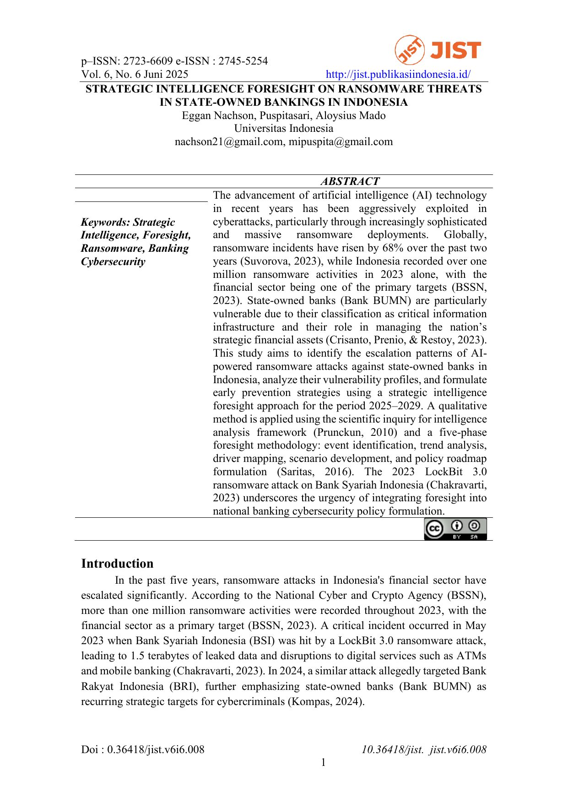

4 works

Strategic Intelligence Foresight
on Ransomware Threats
Analyzing the escalation patterns of AI-powered ransomware attacks against state-owned banks in Indonesia and early prevention strategies for 2025–2029.

Digital Policy Bundles and
Food-System Resilience
Exploring integrated digital policy approaches to strengthen food-system resilience in Indonesia.

Smart Monitoring Food
System Resilience
A proposal for data-driven monitoring of food system resilience using remote sensing and AI analytics.

Reef to Welfare
Examining the link between marine ecosystem health and community welfare in Indonesia.